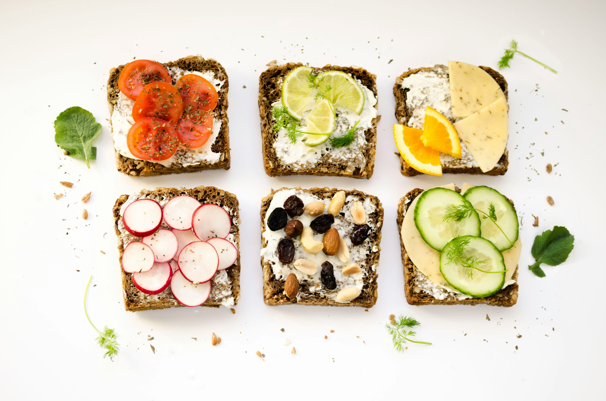
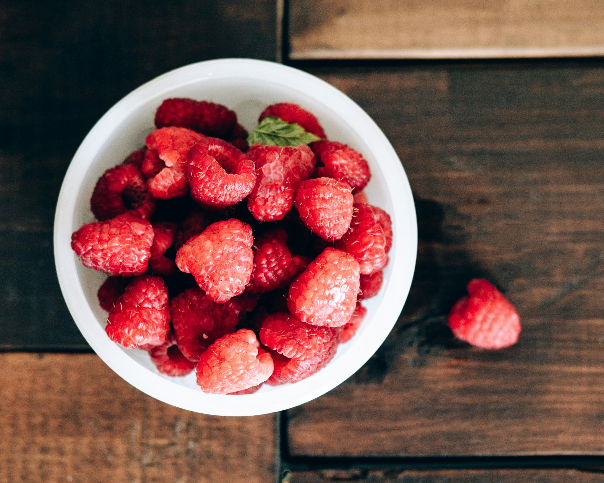
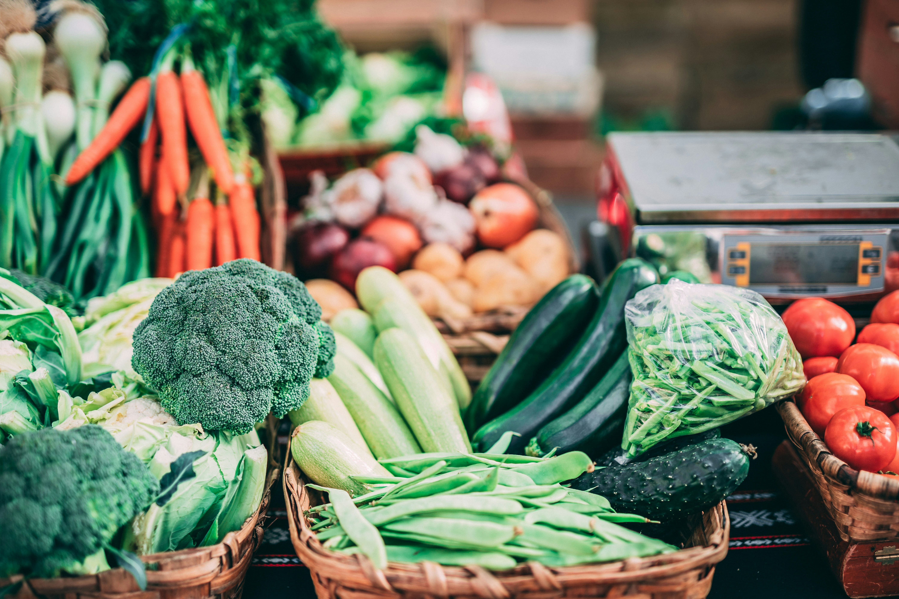

전문가 칼럼

올바른 아침 식사법
하루를 시작하는 가장 좋은 방법은 균형 잡힌 아침입니다.

건강한 간식 선택
간식도 영양가 있게 선택해야 합니다.
수분 섭취의 중요성
물을 충분히 마시는 것은 매우 중요합니다.
면역력 높이는 식단
비타민과 항산화 성분으로 면역력 UP!

당 줄이는 식습관
설탕 줄이는 똑똑한 습관을 길러보세요.

식이섬유의 힘
포만감과 장 건강을 동시에 챙기세요.